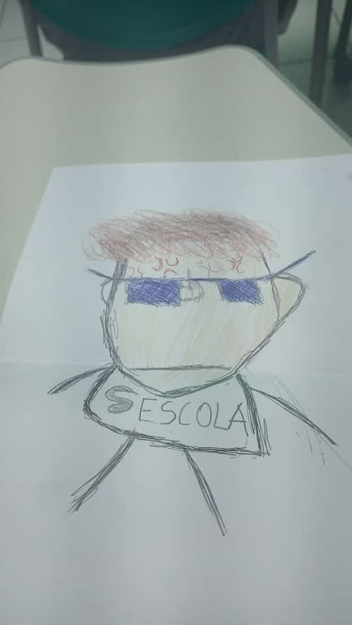
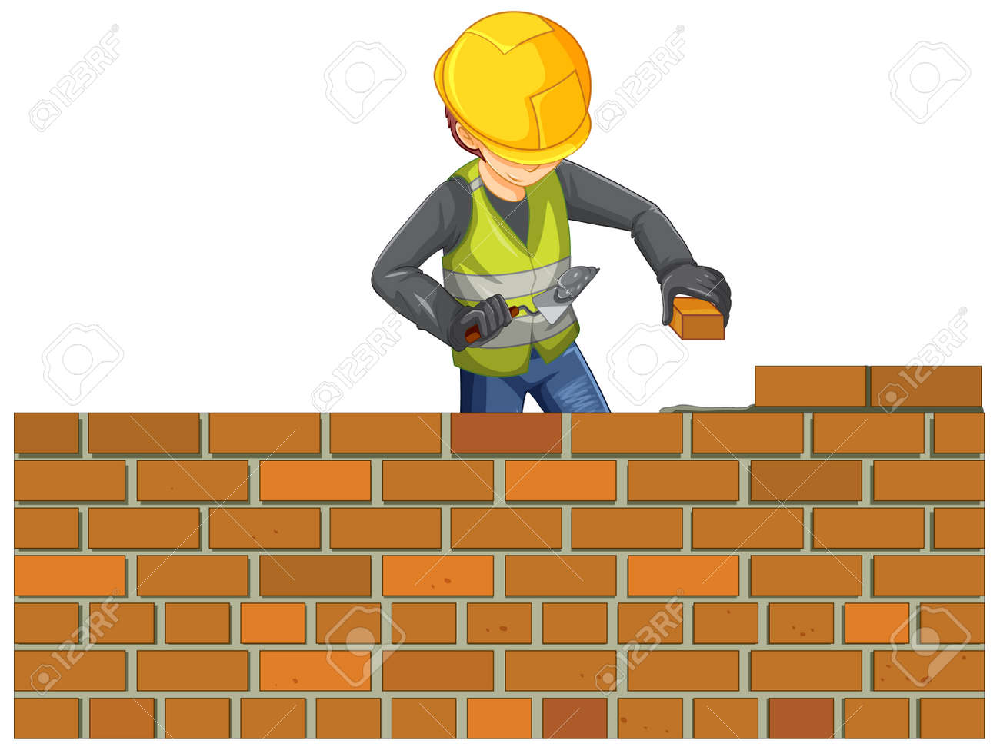
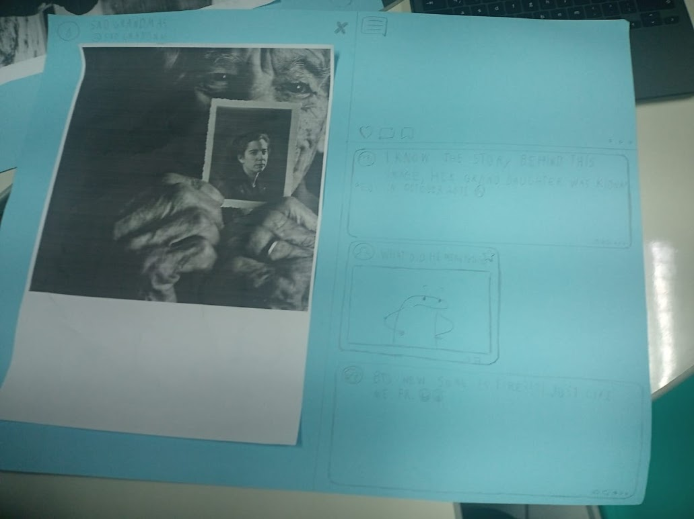
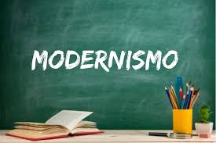

Trimestre 1
LINGUAGENS - 09.02 - Autorretrato e Produção Textual
Autorretrato e Produção Textua

LINGUAGENS - 21/02 - Apresentação Projeto "Revista Literária"
Essa atividade esta em construção

Atividade Simple Past: Verb to be , Regular and Irregular Verbs (affirmative, interrogative and negative forms) - Post com minicontos em inglês
Atividade Simple Past: Verb to be

Atividade Pré-modernismo - Slides com a explanação da obra feita em sala de aula;
Modernismo e Produção Textual

Trimestre 2
Trimestre 3